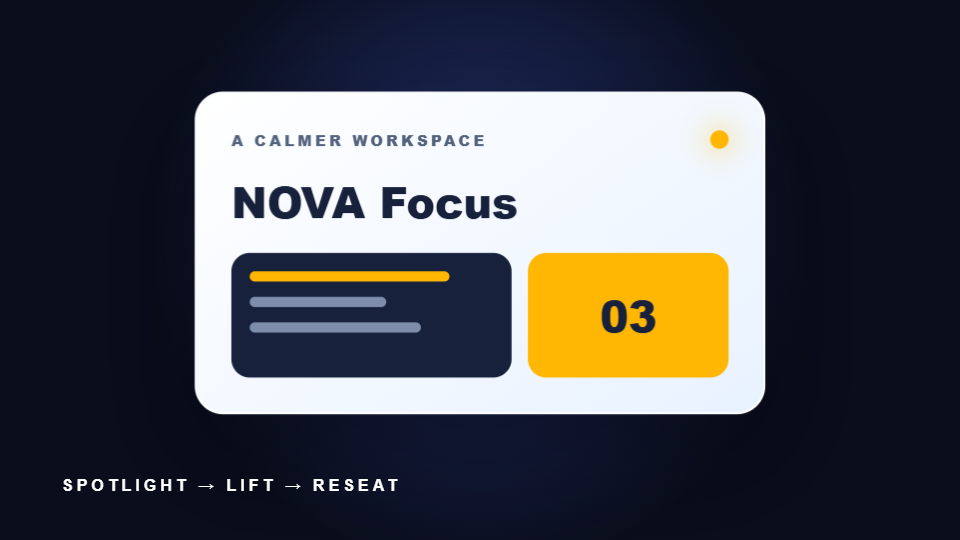
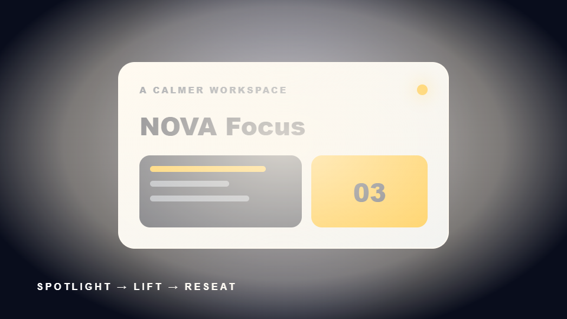
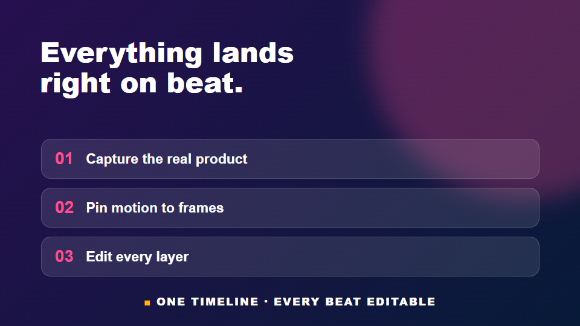

OPEN-SOURCE LEARNING · 2026-10-31
video-shotcraft
小白指南
把真实产品界面，拍成有镜头语言、有声音落点、还能继续编辑的代码宣传片
124 张配方卡150 个镜头10 类产品镜头Motion Workbench实测 commit 1266a3e
它不是“提示词进、神秘视频出”的生成模型，而是真实截图 + 镜头配方 + Remotion 代码 + 帧级验收的制作系统。
- Q1 它到底是什么？
- Q2 镜头卡怎样变成镜头？
- Q3 产品特写的电影感从哪来？
- Q4 三种转场怎样选？
- Q5 音效为什么要减两项偏移？
- Q6 BGM 卡点与声音资产怎么管？
- Q7 Workbench 为何不只是播放器？
- Q8 可编辑、无损与边界是什么？
- Q9 它能给我哪些能力？
- Q10 6 秒实验怎样真实跑通？
来源核验：原 X 页面本轮直连返回 HTTP 402；FxTwitter 镜像读到同作者主帖及其引用的开源帖，被引用帖明确出链到 Vincentwei1021/video-shotcraft。历史 404 已变化：本轮成功克隆该精确仓库并读取源码，没有把搜索到的同名项目绑定为目标。星数与“模型无需 skill 更强”均只视为作者陈述。
video-shotcraft 是给 Claude Code / Codex 的视频制作 skill 与资产库：Agent 读取真实产品，选镜头、排分镜、写 Remotion 组件、配声音、做 QA，最后交付 MP4 与可继续修改的工程。
生成模型路线
擅长生成新画面与运动素材；产品文字、界面结构与品牌一致性需要另外控制。
shotcraft 路线
擅长把已有 Web / 桌面产品拍清楚；镜头、文字、色彩和声音都能定位到代码与帧。
它与已有知识库里的 React 逐帧视频渲染共用渲染地基，但本项目的增量是：产品镜头语言、制作纪律、声音工程和交付后编辑，不是再讲一遍 Composition/Sequence。
Q2
124 张卡、150 个镜头：怎样选，怎样不“凭卡名重写”？
一张卡是一类动效意图，可含多个实现变体，所以卡数不等于镜头数。当前版本保留 124 卡 / 150 镜头 / 10 类；先按功能与能量选卡，再读卡片全文和准确 demo，不能只复制一个名字让模型自由发挥。
| 类别 | 卡数 | 典型任务 | 类别 | 卡数 | 典型任务 |
|---|
| 开场与品牌 | 11 | 立主角、品牌揭示 | 运镜与空间 | 13 | 2.5D 推近、环绕 |
| 转场 | 19 | 镜头交棒 | 文字与字卡 | 25 | 标题、字标、隧道 |
| 界面登场 | 22 | 卡片、面板入场 | 交互演示 | 13 | 点击、筛选、换主题 |
| 数据与指标 | 9 | 图表与数字叙事 | 光效与强调 | 23 | 聚光、扫描、落地 |
| 节奏与蒙太奇 | 8 | 卡点、并行场景 | 收尾 | 7 | 合影、logo 收束 |
数量来自当前 README；不是历史搜索摘要。镜头卡本身也可单独抽出来用于其他视频。
Q3
产品特写的“电影感”从哪来？为何不是特效越多越好？
核心是一个主角 + 一条完整动作弧 + 可读停留。以 spotlight-hero-card 为例：聚光找到一张卡，相机斜侧推进，卡片弹起、悬浮、扫描，再贴回页面；光只给主角，落定后留出真正静止的阅读时间。
真实素材三件套
全页 2x 截图、元素 cutout、layout.json。复刻既有页面优先真实截图，不手搓一个“差不多”的 UI。
视觉从产品生长
字体、栅格、圆角、色彩先提 tokens；卡片只继承运动语法，不把模板皮肤硬套到新产品。
呼吸位也是帧预算
品牌落定 hold ≥1 秒，批量动作后留 0.5 秒；开场主体动作给足约 3 秒。
常见反模式：每张卡都闪、相机一直漂、推近后文字发糊。文字糊先查 2x/4x 纹理与栅格化路径，不要先加景深；结尾让相机锁死。
转场是镜头之间的语义交棒，不是独立于内容的装饰。shotcraft 把常用接缝归纳为推进流白、whip-pan 急刹、mask-wipe 穿窗三式；在分镜阶段就分配帧预算，不能做完镜头再硬塞。
本实验采用 A 式：from = SHOTS.features.from - 5、总长 10f，让暖白闪跨骑第 90 帧硬切。真实抽出的第 89 帧显示前镜被暖白覆盖，证明它不是“写在表里但没出现”的转场。
因为“音源文件开始”不等于“观众听到的重音”，而“渲染时间线”也可能与最终 MP4 音轨存在封装偏移。正确目标是音源峰值落到动作峰值帧。
Sequence.from = 目标峰值帧 − 音源峰值滞后帧 − 输出音轨偏移帧
| 本实验音源 | 10ms RMS 峰值滞后 | 目标帧 | Sequence.from |
|---|
| whoosh-fast.mp3 | 21.75f | 36f | 14f |
| impact-cine.mp3 | 16.65f | 70f | 53f |
| transition-soft.mp3 | 13.65f | 114f | 100f |
三条音源先由 Remotion 自带 ffmpeg 解码为 48kHz PCM，再由实际脚本测量。三探针交叉相关测得当前 Remotion 4.0.532 + AAC 48kHz + MP4 输出偏移为 +0.01 / +0.01 / −0.01f，因此没有照搬上游历史 1.28f。
测量边界：10ms RMS、sample peak 不是 LUFS / true peak，也不自动等于语义落点；多段敲击、渐强素材仍需在成片语境中试听。本实验有波形与交叉相关证据，但不冒称完成主观听感验收。
Q6
BGM 卡点、SFX 选材与许可，怎样进入同一条时间线？
强节奏音乐先分析再分镜：用真实 beat 序列拟合 BPM 与相位，镜头边界写 beatF(n)；稀疏重音钉真实瞬态。画面锁定后再精确钉 SFX，所有轨道从同一张 SHOTS 表派生。
新片选音
按动作、材质、时长、攻击与尾音写搜索需求；Freesound 默认 CC0，允许署名时可选 CC BY。下载到工程本地，保存 manifest、credits、哈希与实测分析。
混音与交付
BGM 定能量骨架，SFX 只补画面独有动作；连发用不同样本和递减音量。配 BGM 时从同一时间线交付带 BGM / 无 BGM（保留 SFX）两版。
本实验三条音频是模板中授权记录可回查的 Mixkit 历史回归素材，原 attribution 已保留；没有把它们说成新片从 Freesound 精选。MP3 预览转 WAV 也不会变成“原始无损素材”。
Q7
Motion Workbench 为何不只是“再给你一个播放器”？
它把成片重新拆成镜头 / 转场 / 字幕 / 音效多轨工程：既能挪、裁、分割、复制、变速，也能通过 props + schema 改镜头内部的文案、字号和颜色，最后用 Remotion 导出。
| 区域 | 能做什么 | 工程前提 |
|---|
| 素材库 | 成片单元、public 素材、150 个 demo、音频上轨 | 生成索引；素材路径相对 public |
| 属性面板 | 文本、颜色、滑杆、开关、时间与图层 | 语境参数有默认值 props 与 schema |
| 多轨时间线 | 挪动、裁边、分割、复制、变速、层序 | 组件对帧纯函数，tween clamp |
| 顶栏导出 | JSON 存档、导入、撤销/重做、导出 MP4 | dev server 调 Remotion 渲染 |
不是界面能拖动就算成功。官方接入契约要求：清单与 Main 共享时间表， untouched import 与原片做同帧 PNG 比对；差异像素 <0.1% 才视为一致。浏览器存档在 localStorage，清单哈希变化才重新导入。
本实验真正验证
实际 TS 清单经 esbuild 执行：2 镜头 + 1 转场 + 1 字幕 + 3 音效；帧号与 [14,53,100] 断言通过，props/schema 默认键完整。
本实验没有冒充
依赖安装被权限层拒绝，未启动完整 Workbench UI，也未跑官方像素 parity。因此这里只称“清单可执行、结构通过”，不称“官方无损验收通过”。
与剪映的分工：Workbench 适合本机改几处并保留镜头内部参数；剪映草稿适合在外部剪辑软件继续剪，底片按镜头切段、字幕重建为原生文本、SFX/BGM 分轨。上游只记录了 Mac 剪映 11.2 实测，Windows 导出未验证。
你得到的不只是 150 个“好看动画”，而是一套把产品信息转成镜头、把镜头变成可验收工程、把工程交给非程序员继续修改的生产方法。
适合你的 5 个具体用途
① 给开源仓库做发布片；② 把 SaaS 新功能做成 6–30 秒产品预告；③ 从 Gallery 抽一个镜头升级现有视频；④ 给已有片子补统一的声音设计；⑤ 把代码成片交给同伴在 Workbench 改文案。
三种创作模式
Ink Press 模板：最快复刻已验收结构。
自主自由创作：Agent 记录判断并连续推进。
共同创作：在产品简报、视觉方向、镜头映射和分镜处由人确认。
八阶段流水线：方向性错误不要带进昂贵渲染
0 产品理解 → 1 styleframe → 2 功能到镜头 → 3 分镜放行 → 4 最终采集 → 5 逐镜头+静帧 → 6 声音 → 7 独立终检
当前任务遵照 worker 约束不 spawn 子代理，因此本轮没有执行“独立 reviewer”步骤；最后只进入 ready，等待协调者做真实独立审核。
实验不是重讲 Remotion，而是把本项目的四个增补组合起来：产品镜头动作弧 + 跨切点闪白 + 实测钉帧 + Workbench 同源清单。全部源码在 exercise/shotcraft-lab/。
取得精确上游与版本git clone https://github.com/Vincentwei1021/video-shotcraft.git F:\reminder\video_shotcraft\repo
git -C F:\reminder\video_shotcraft\repo log --oneline -1
✅ 实测输出：1266a3e Source project SFX from Freesound and acknowledge vibe-motion/sound (#123)
准备实际运行依赖权限层拒绝 npm 安装后，本轮用目录联接复用本机已有 Remotion 4.0.532；没有假称上游 4.0.484 模板被原样验证。
cmd /c "mklink /J F:\reminder\video_shotcraft\exercise\shotcraft-lab\node_modules F:\reminder\ai-video-pipeline\exercise\remotion_app\node_modules"
node node_modules\@remotion\cli\remotion-cli.js versions
✅ 实测：CLI 与 Remotion 各包均为 4.0.532。
解码并测量三条音源node node_modules\@remotion\cli\remotion-cli.js ffmpeg -y -i public/audio/whoosh-fast.mp3 -ac 1 -ar 48000 -acodec pcm_s16le out/whoosh-fast.wav
python -I scripts/analyze_wav.py out/whoosh-fast.wav out/impact-cine.wav out/transition-soft.wav
✅ 实测峰值滞后：21.75f / 16.65f / 13.65f；其余两条 ffmpeg 解码命令与完整输出见 experiment-log。
渲染 180 帧真实成片node node_modules\@remotion\cli\remotion-cli.js render src/index.ts ShotcraftLab out/baseline.mp4 --concurrency=2
✅ 实测：Rendered 180/180、Encoded 180/180；H.264 + AAC、960×540、30fps、6.016 秒、753133 字节。
抽帧、测输出偏移、验清单node node_modules\@remotion\cli\remotion-cli.js still src/index.ts ShotcraftLab out/qa/hero-f36.png --frame=36
python -I scripts/measure_av_offset.py out/baseline.wav whoosh=out/whoosh-fast.wav=14 impact=out/impact-cine.wav=53 transition=out/transition-soft.wav=100
node scripts/validate-manifest.cjs
✅ 三探针输出偏移约 0；清单 2+1+1+3 轨断言通过。官方 Workbench UI / parity 未运行。

f36 · 产品主角抬升
f89 · 暖白闪跨骑切点
f140 · 三行功能落定最终解码 PCM sample peak 为 −6.90dBFS；这只能说明本次样本峰值余量，不能代替 LUFS / true peak 或听感结论。命令均在 F:\reminder\video_shotcraft\exercise\shotcraft-lab 执行，完整记录见 exercise/experiment-log.md。
最值得带走的不是“Agent 会自动做视频”，而是四个可复用工程契约：镜头卡与 demo 的三读契约、真实产品素材契约、声音双偏移与同源时间线契约、Workbench props/schema/parity 契约。
本指南的实测边界：仓库恢复可读并克隆成功；独立 6 秒实验真实渲染、抽帧、音频测量与清单执行完成。未验证完整 Ink Press 原片、Freesound 在线下载、浏览器 Workbench UI、官方 parity、Windows 剪映导出、主观试听与任何模型效果比较。
来源（按证据角色区分）
- 原帖：https://x.com/VincentWei93/status/2105259624593260656 （本轮直连 HTTP 402）
- 原帖镜像与引用关系：https://api.fxtwitter.com/VincentWei93/status/2105259624593260656
- 被引用开源帖：https://x.com/VincentWei93/status/2079118667074376114
- 精确目标仓库：https://github.com/Vincentwei1021/video-shotcraft （commit 1266a3e）
- 制作规则：https://github.com/Vincentwei1021/video-shotcraft/blob/main/SKILL.md
- 镜头卡：https://github.com/Vincentwei1021/video-shotcraft/tree/main/references/shots
- 声音设计：https://github.com/Vincentwei1021/video-shotcraft/blob/main/references/sound-design.md
- Workbench 契约：https://github.com/Vincentwei1021/video-shotcraft/blob/main/references/workbench.md
- Gallery：https://vincentwei1021.github.io/video-shotcraft/